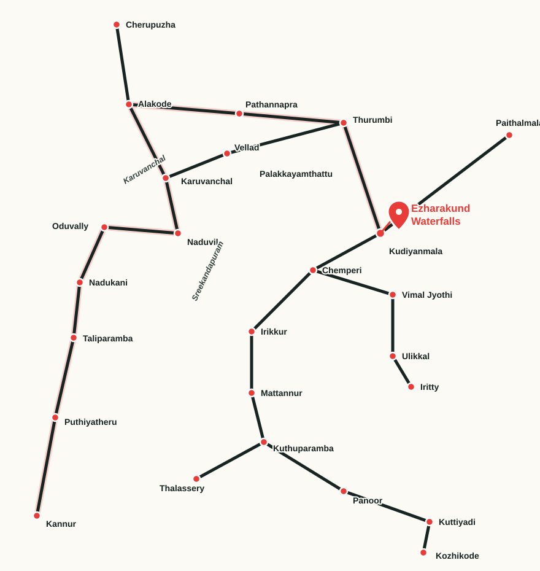
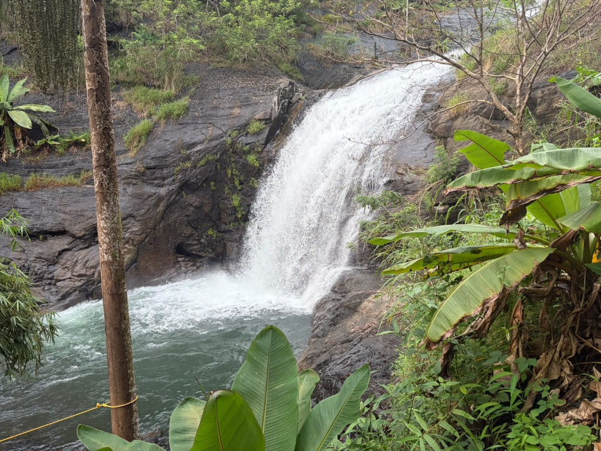
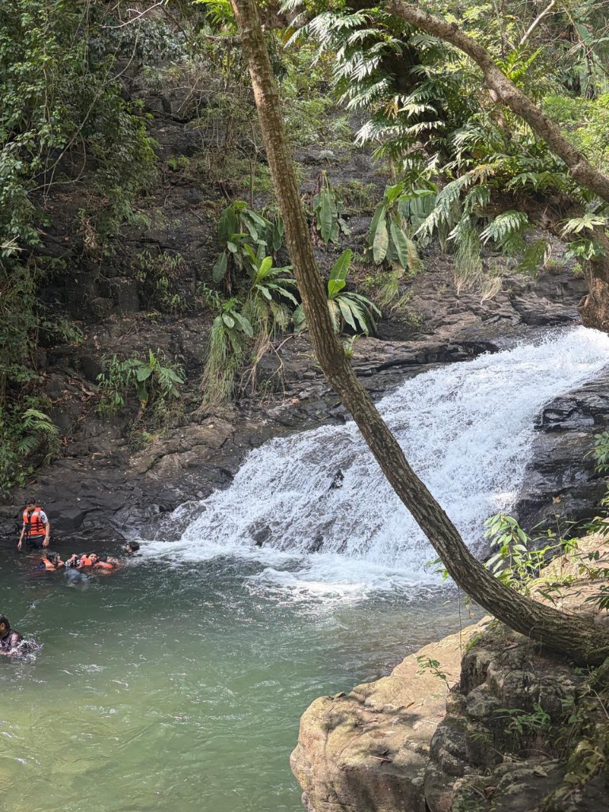
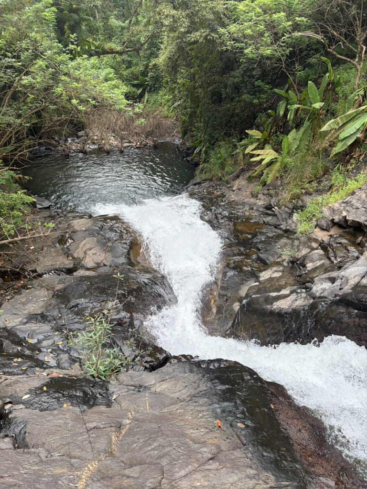

01 / EASY
Start at Chathamala Facility Centre
Ezharakund Waterfalls, Kannur
Enjoy a short, shaded walk to beautiful pools and waterfalls in North Malabar.
About the falls
Ezharakund means “seven-and-a-half pits” in Malayalam. You can see seven rocky pools. Water flows from one pool to the next.
Read the visitor guideStart at Chathamala Facility Centre
See water move from pool to pool
Paddle the calm rock pool basin
At the end of the marked walk
On-site activity
Paddle peacefully through the calm, shaded waters of the natural pool basin. Kayaking at Ezharakund is completely free for all visitors.
River Pool Kayaking
5-Min Video & Photos
Come and enjoy the beauty of North Malabar.
WALK WITH CAREനമസ്കാരം
A Kerala welcome
Come with a calm mind, enjoy the green hills, and respect the land and people around you.
Find your way
Ezharakund Waterfalls is located in Kannur, Kerala. This easy-to-read sketch shows the main route and nearby towns.
The red highlight shows the main route to Ezharakund Waterfalls.

Little glimpses



Plan your visit
Choose a date for your visit. Wear shoes with a good grip. Stay on the walking path and use the safety rails.
Meet the guide
Our local guide helps you enjoy Ezharakund Waterfalls safely and respectfully.
He guides visitors along the seven natural pools and ensures a safe, authentic trekking experience at Ezharakund Waterfalls.
Visitor Essentials
Everything you need to know before visiting Ezharakund Waterfalls in Kannur, Kerala.
8:00 AM – 5:00 PM
Open all 7 days of the week₹100 per person
Offline ticket counter at Chathamala7 Cascade Pools
2 km shaded forest walking trailFree for all visitors
Life jackets provided on siteKudiyanmala, Kannur
Chathamala Facility Centre, KeralaKannur Airport (CNN)
Approx. 45 km via Mattannur – AlakodeCommon Questions
Helpful answers about visiting Ezharakund Waterfalls, trail safety, ticket booking, and reaching the destination.
Find the starting point
Chathamala Facility Centre
Ezharakund Waterfalls, Kannur, Kerala